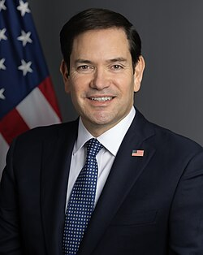

Marco Rubio
Senator and secretary of state, born 1971

A senator from Florida from 2011 to 2025, including as acting chair of the Senate Intelligence Committee, and secretary of state from 2025. After a June 2020 Senate hearing he pressed for the release of Navy UAP video footage. 1
He appears in The Age of Disclosure, a 2025 documentary about claimed government programs to recover non-human craft. 2
Open in the interactive Watcher
Related
- UAP Task Force Pressed the UAP Task Force
- Navy videos released
Sources
- Unidentified Aerial Phenomena Task Force Wikipedia
- Marco Rubio Wikipedia